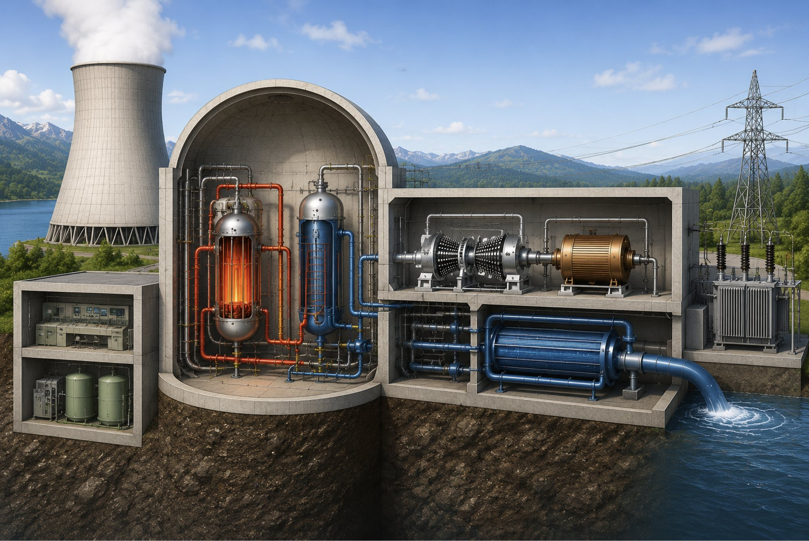
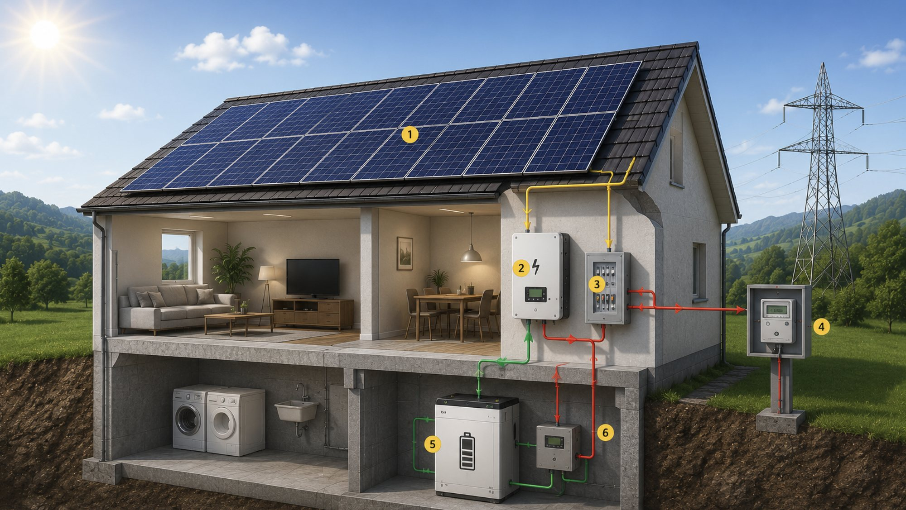
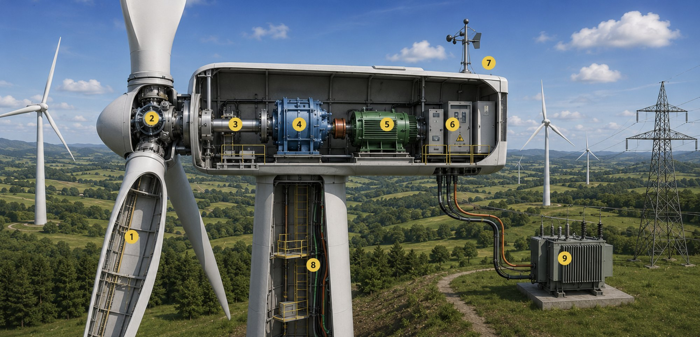
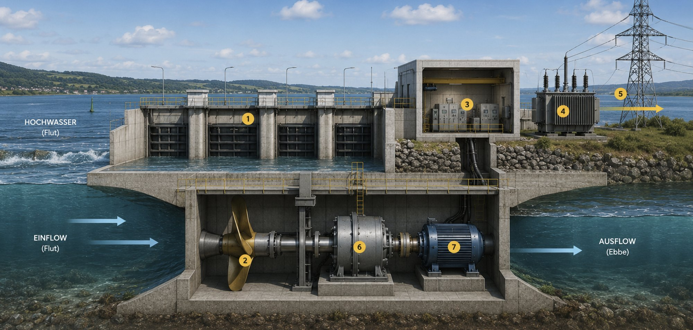

Energiebereitstellung in der Schweiz · Interaktive Folie
Folgen Sie dem Weg des Wassers vom Stausee bis ins Stromnetz: Klicken Sie die Stationen 1–8 im Bild oder im Seitenpanel an.
Energiebereitstellung in der Schweiz · Interaktive Folie
Vom Brennstab bis ins Netz: Klicken Sie die Stationen 1–8 im Bild oder im Seitenpanel an. Achten Sie darauf, was gleich läuft wie bei der Wasserkraft – und was ganz anders.
Energiebereitstellung in der Schweiz · Interaktive Folie
Kein Kraftwerk im Tal, sondern eines auf dem Hausdach: Klicken Sie die Stationen 1–6 im Bild oder im Seitenpanel an – von den Modulen bis zum Zähler an der Hauswand.
Energiebereitstellung in der Schweiz · Interaktive Folie
Kein Stausee, kein Dampf – und trotzdem endet alles wieder beim Generator. Klicken Sie die Stationen 1–9 im Bild oder im Seitenpanel an; die Nummern sind im Bild bereits eingezeichnet.
Energiebereitstellung weltweit · Interaktive Folie
Ein Kraftwerk, das es in der Schweiz nicht geben kann: Hier liefert der Mond die Energie. Klicken Sie die Stationen 1–7 im Bild oder im Seitenpanel an – weiter unten steht, wo auf der Welt solche Anlagen tatsächlich stehen.
Planung, Bewilligung und Bau im Vergleich · Interaktive Folie
Gebaut ist ein Kraftwerk schnell. Bewilligt zu werden dauert. Dieser Reiter zeigt für jede Anlage aus den vorherigen Reitern, wie sich die Jahre aufteilen – und warum bei manchen Projekten der Papierkrieg zehnmal länger dauert als die Baustelle.
Was kommt, was bleibt, was nie kommt · Interaktive Folie
Wasserstoff, Kernfusion, Antimaterie, Erdwärme – und zum Schluss zwei Exoten, die es tatsächlich gibt. Für jede Technologie steht hier, wie weit sie ist und wann realistischerweise Strom daraus fliesst.
Vier Reaktoren an drei Standorten – Beznau I und II, Gösgen und Leibstadt – lieferten 2024 rund 28 % des Schweizer Stroms. Neue Kernkraftwerke sind seit dem Energiegesetz von 2018 nicht mehr bewilligungsfähig; die bestehenden dürfen laufen, solange sie als sicher gelten.

Photovoltaik deckte 2024 rund 7,4 % der Schweizer Stromproduktion – wenig im Vergleich zur Wasserkraft, aber mit Abstand der am schnellsten wachsende Anteil. Das Besondere: Hier ist die Kundschaft gleichzeitig Produzentin.

In der Schweiz drehen sich rund 50 grössere Windturbinen; zusammen liefern sie etwa 161 Millionen Kilowattstunden im Jahr – weniger als 0,5 % des Schweizer Stroms. Am Wind liegt das selten: Bis eine Anlage bewilligt ist, vergehen oft über zwanzig Jahre. Interessant ist sie trotzdem, denn Wind weht vor allem im Winterhalbjahr – also genau dann, wenn Solar und Wasserkraft schwächeln.

Ebbe und Flut heben und senken das Meer zweimal täglich – angetrieben von der Anziehungskraft des Mondes. Wo der Tidenhub mindestens etwa fünf Meter beträgt, lässt sich daraus Strom machen. Die Schweiz hat kein Meer; dieser Reiter ist deshalb kein Schweizer Kraftwerk, sondern ein Vergleich: andere Energiequelle, gleiche Technik.

254 Megawatt, seit 2011 am Netz, 10 Turbinen, rund 550 Millionen kWh im Jahr – das grösste der Welt. Der Damm war ursprünglich zur Landgewinnung gebaut; das Wasser dahinter kippte, und man öffnete ihn wieder für die Gezeiten.
240 Megawatt, seit 1966 in Betrieb, 24 Rohrturbinen, Tidenhub über 8 Meter. Das erste grosse Gezeitenkraftwerk der Welt – und bis 2011 auch das grösste. Preis dafür: Das Becken verlandet, einzelne Fischarten sind verschwunden.
20 Megawatt, 1984 bis 2019 – dann stillgelegt, weil die Turbine zu viele Fische tötete und ein Bauteil versagte. Ein Lehrstück: erneuerbar heisst nicht automatisch unproblematisch.
Kein Damm, sondern Turbinen auf dem Meeresgrund – ein Unterwasser-Windpark, angetrieben von der Gezeitenströmung. Seit 2016 am Netz und die Bauart, auf die heute am meisten gesetzt wird.
Null Gramm Gezeitenstrom – und das bleibt so. Am nächsten kommt dem Prinzip das Pumpspeicherwerk im ersten Reiter: Auch dort wird Wasser gehoben und später wieder abgelassen. Nur macht das bei uns eine Pumpe statt der Mond.
Fragt man, warum die Schweiz beim Ausbau nicht schneller vorwärtskommt, lautet die Antwort selten «zu wenig Technik» und fast immer «zu viel Verfahren». Der Balken zeigt Planung und Bewilligung in Ocker und die eigentliche Bauzeit in Blau. Je nach Anlage ist der ockerfarbene Teil ein paar Wochen lang – oder mehr als zwei Jahrzehnte.
1998 erste Machbarkeitsstudie. Dann ein Vierteljahrhundert Einsprachen, Rekurse und Instanzen bis hinauf ans Bundesgericht, das 2021 grünes Licht gab. Ein halbes Jahr später rollten die Bagger, zwei Jahre danach drehten sich die sechs Turbinen. Rechnet man nach: 23 Jahre Papier auf 2 Jahre Baustelle – ein Verhältnis von rund zwölf zu eins. Die sechs Anlagen liefern heute Strom für etwa 20'000 Menschen.
Zum Vergleich der Gegenpol: Auf dem Gütsch ob Andermatt steht der höchste Windpark Europas auf 2332 Metern. Dort ging es deutlich schneller – weil kaum jemand oben wohnt, der Einsprache erheben könnte.
Das Parlament hat reagiert. Für Solar-, Wind- und Wasserkraftanlagen von nationalem Interesse gilt neu ein konzentriertes kantonales Verfahren: Der Standortkanton erteilt sämtliche kantonalen und bisher kommunalen Bewilligungen in einem Zug statt nacheinander. Und der Rechtsmittelweg wird gekürzt – auf kantonaler Ebene ist nur noch eine einzige Beschwerde ans obere kantonale Gericht möglich.
Ob daraus wirklich Tempo wird, weiss man erst in einigen Jahren. Klar ist nur: An der Technik hat noch nie etwas gelegen.
Einspracherecht heisst: Wer betroffen ist, darf sich wehren. Genau das hat die Schweiz stark gemacht – und genau das bremst jetzt den Ausbau.
1. Wem gehört die Landschaft – der Gemeinde, dem Kanton, allen?
2. Ist es gerecht, das Einspracherecht ausgerechnet für Windräder zu kürzen,
aber nicht für eine Überbauung?
3. Wenn ein Projekt 25 Jahre dauert: Wer entscheidet dann eigentlich –
die Generation, die plant, oder die, die den Strom braucht?
In den Medien klingt vieles nach «gleich soweit». Der Blick auf die Zahlen sortiert das schnell: Manches läuft längst und setzt sich trotzdem nicht durch, anderes braucht noch Jahrzehnte – und eines wird nie ein Kraftwerk, so oft es in Filmen auch vorkommt.
Strom spaltet Wasser in Wasserstoff und Sauerstoff, die Brennstoffzelle macht daraus wieder Strom. Das funktioniert – nur bleibt bei jedem Schritt Energie liegen. Vom Kraftwerk bis zum Rad kommt bei der Batterie rund dreimal mehr an.
Die Schweiz war weltweit vorne dabei: Migros, Coop und andere fuhren die ersten Wasserstoff-Lastwagen. Ende 2024 waren 59 schwere Brennstoffzellenfahrzeuge zugelassen – 2025 kamen ganze vier dazu, während gleichzeitig 942 neue Elektro-Lastwagen auf die Strasse kamen. Agrola schliesst seine drei Wasserstofftankstellen Ende 2026 wegen zu wenig Absatz.
Wasserstoff ist kein Kraftwerk, sondern ein Speicher – interessant dort, wo eine Batterie zu schwer wäre: Stahlwerk, Schiff, Flugzeug.
Statt schwere Kerne zu spalten, verschmilzt man leichte: Wasserstoff wird zu Helium, wie in der Sonne. Kein langlebiger Atommüll, kein Kettenreaktions-Risiko, Brennstoff praktisch unbegrenzt. Der Haken ist die Temperatur – rund 150 Millionen Grad, zehnmal heisser als der Sonnenkern.
Der Versuchsreaktor ITER in Südfrankreich, gebaut von 35 Staaten, sollte ursprünglich 2025 das erste Plasma zünden. Nach dem neuen Zeitplan beginnt der Betrieb 2034, der eigentliche Fusionsbrennstoff kommt 2039 zum Einsatz. Und ITER ist noch kein Kraftwerk – es speist nie eine Kilowattstunde ins Netz. Das soll erst der Nachfolger DEMO, nicht vor den 2050er-Jahren.
Ein alter Insiderwitz: Die Fusion ist seit den 1950er-Jahren konstant dreissig Jahre entfernt.
Trifft Antimaterie auf Materie, verwandelt sich beides vollständig in Energie – keine andere Reaktion ist so ergiebig. Ein Gramm Antimaterie liefert rund 50 Millionen Kilowattstunden, genug für die ganze Schweiz für etwa acht Stunden. Kein Wunder taucht der Stoff in jedem zweiten Science-Fiction-Film auf.
Nur muss man ihn zuerst herstellen. Für dieses eine Gramm bräuchte man rund 25 Billiarden Kilowattstunden Strom – das ist der gesamte Schweizer Stromverbrauch von etwa 400'000 Jahren. Man steckt also rund 500 Millionen Mal mehr Energie hinein, als man herausbekommt. Sämtliche Teilchenbeschleuniger der Welt haben zusammen bis heute noch nicht ein Millionstel Gramm produziert.
Antimaterie ist keine Energiequelle, sondern die schlechteste Batterie, die sich denken lässt. Physikalisch faszinierend, energiewirtschaftlich chancenlos.
Je tiefer man bohrt, desto heisser wird das Gestein – pro hundert Meter etwa drei Grad. Ab rund vier Kilometern lässt sich Wasser so weit erhitzen, dass eine Turbine läuft. Das Beste daran: Erdwärme liefert Tag und Nacht, Sommer wie Winter gleich viel.
Zweimal ging es schief. In Basel 2006 und in St. Gallen 2013 löste das Aufbrechen des Gesteins spürbare Erdbeben aus, beide Projekte wurden abgebrochen. Jetzt läuft im jurassischen Haute-Sorne ein Pilotprojekt mit einem sanfteren Verfahren: 2024 wurde über 4000 Meter tief gebohrt, der Bund unterstützt mit bis zu 90 Millionen Franken. Ab 2029 könnte Strom für rund 6000 Haushalte fliessen.
Die einzige Technologie auf dieser Seite, bei der die Schweiz in wenigen Jahren wissen wird, ob es klappt.
Nicht jede Alternative ist Zukunft – manche war schon einmal Gegenwart.
Erhitzt man Holz unter Luftmangel, verbrennt es nicht, sondern vergast. Übrig bleibt ein brennbares Gemisch aus rund 20 % Kohlenmonoxid und 20 % Wasserstoff – Holzgas. Damit lässt sich ein ganz normaler Motor betreiben.
Im Zweiten Weltkrieg war das keine Spielerei: Weltweit fuhren zeitweise über eine Million Fahrzeuge mit einem Vergaser am Heck, auch in der Schweiz. Zwei bis drei Kilogramm Holz ersetzten einen Liter Benzin. Bequem war es nicht – anheizen, nachfüllen, reinigen, und Leistung hatte man deutlich weniger.
Und die Not gibt es noch: In Nordkorea fahren bis heute Lastwagen, Busse und Landmaschinen mit einem Holz- oder Holzkohlevergaser hinter dem Führerhaus, weil Treibstoff fehlt oder für normale Leute unbezahlbar ist. Nach jeder Sanktionsrunde werden es mehr, vor allem auf dem Land. Alle 50 bis 80 Kilometer muss nachgefüllt werden – Holz gibt es, Benzin nicht.
Heute steckt die Technik in Holzkraftwerken. Die Anlage in Stans läuft seit 2008, vergast jährlich 8000 Tonnen Altholz und liefert 1,2 Megawatt Strom für rund 1000 Haushalte. Elektrisch sind das nur 25 bis 30 Prozent – nutzt man die Abwärme mit, kommt man aber auf 80 bis 90 Prozent.
Technisch überzeugend, wirtschaftlich mühsam: Teer und Wartung fressen den Gewinn. In der Schweiz laufen nur eine Handvoll solcher Anlagen.
Gas wird auf 200 bar verdichtet und in einem Drucktank mitgeführt. Der Motor ist fast derselbe wie beim Benziner. Weil Gas sauberer verbrennt, fällt weniger CO₂ an – und je mehr Biogas beigemischt ist, desto besser wird die Bilanz. In der Schweiz liegt der Biogasanteil im Treibstoff bei rund 20 Prozent; mit reinem Biogas hat das Gasauto die beste Ökobilanz überhaupt.
Rund 150 Tankstellen gibt es im Land – gemessen an etwa 3400 Benzinstationen ist das wenig, aber deutlich mehr als beim Wasserstoff. Als Privatauto blieb es trotzdem ein Flop: Es fehlten grössere Modelle, und das Elektroauto machte das Rennen. Im Lieferverkehr fahren die Grossverteiler dagegen ganze Biogasflotten.
Das Beispiel zeigt, dass die beste Ökobilanz allein nichts nützt. Durchsetzen kann sich nur, was auch zum Alltag passt.
Und der rote Faden aus den anderen Reitern? Er hält auch hier. Ob Fusion, Erdwärme oder Holzgas – am Ende steht überall dieselbe Maschine: ein Generator, in dem sich etwas dreht.
Wenig Schnee im Winter und einer der trockensten Frühlinge seit Messbeginn 1864 haben Spuren hinterlassen: Die Schweizer Speicherseen sind mit 46 Prozent so wenig gefüllt wie seit 20 Jahren nicht mehr. Die Aufsichtsbehörde Elcom sieht die Versorgung dennoch nicht gefährdet – Speicherseen decken rund 20 Prozent des Strombedarfs im Winterhalbjahr, und die Zuflüsse der nächsten Monate können noch viel bewegen. Der Blick voraus bleibt anspruchsvoll: Mit den schmelzenden Gletschern wird der sommerliche Zufluss in den kommenden Jahrzehnten deutlich abnehmen.
Verbinden Sie die Meldung mit der Folie: Weshalb ist der Füllstand im Juli für das Winterhalbjahr entscheidend? Und welche Rolle könnte der Pumpbetrieb spielen, wenn die natürlichen Zuflüsse schwächer werden?
Die Schneeschmelze füllt die Seen jeden Sommer neu – von 14 Prozent Anfang Juni auf 46 Prozent Mitte Juli. Entscheidend wird der Stand im Herbst: Die Solarenergie, inzwischen bei rund 11 Prozent des Schweizer Stroms, liefert im Winter etwa zwei Drittel weniger – dann müssen die Speicherseen einspringen. Dazu kommt das europäische Umfeld: In der EU wird rund ein Sechstel des Stroms aus Gas erzeugt; wird Gas knapp, steigen auch die Strompreise. Die Schweiz bezog 2025 gut 10 Prozent ihres Verbrauchs aus Frankreich. Für die Stromrechnung gilt: Die Tarife liegen dieses Jahr im Schnitt rund 5 Prozent tiefer als im Vorjahr – im September publiziert die Elcom die Tarife fürs nächste Jahr, ein Anstieg gilt als möglich.
Quellen: SRF «10 vor 10» / BFE, 16.07.2026 · SRF Tagesschau, 01.06.2026
Vier Fragen zur Selbstkontrolle – klicken Sie die passende Antwort an.
Bild: KI-generierte Schnittbild-Illustration · Zahlen: Bundesamt für Energie (BFE), Elektrizitätsbilanz 2024 (definitiv); Windkraft Schweiz: Suisse Eole / BFE; Gezeitenkraftwerke: Betreiber- und Länderangaben; Planungs- und Bauzeiten: Suisse Eole, KKW Gösgen, UVEK, Runder Tisch Wasserkraft; Zukunftstechnologien: ITER / Max-Planck-Institut für Plasmaphysik, EnergieSchweiz, Bulletin electrosuisse; Holzvergaser Nordkorea: Radio Free Asia · Stand Juli 2026 · Aufbereitet für den ABU-Unterricht.